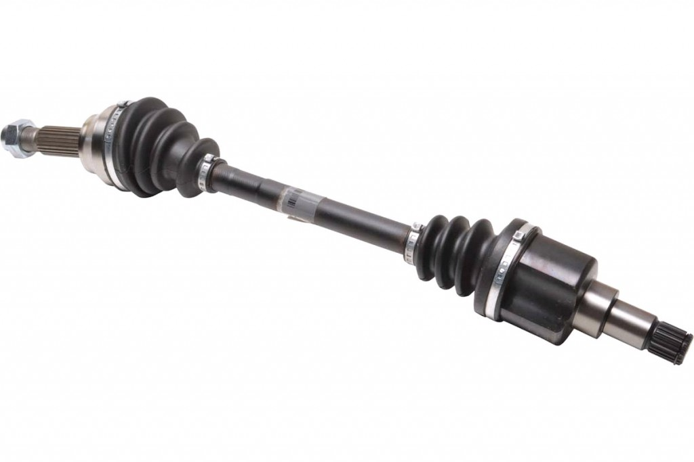
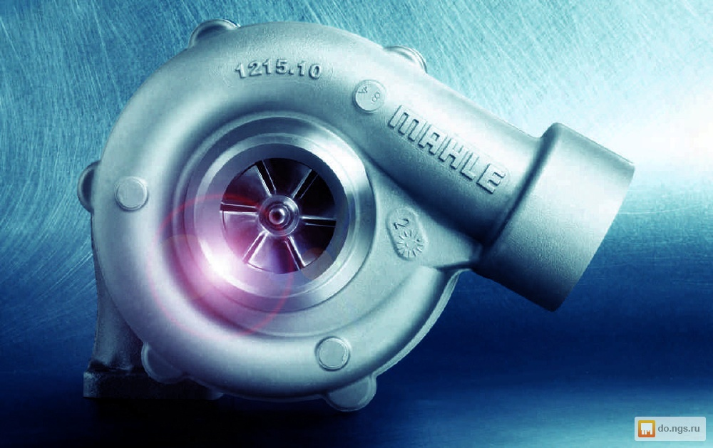
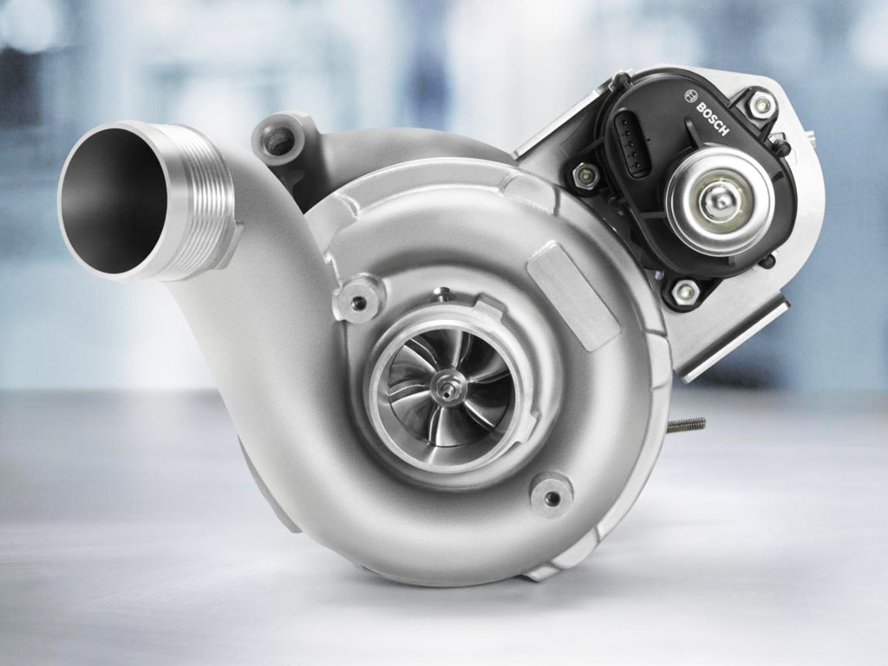
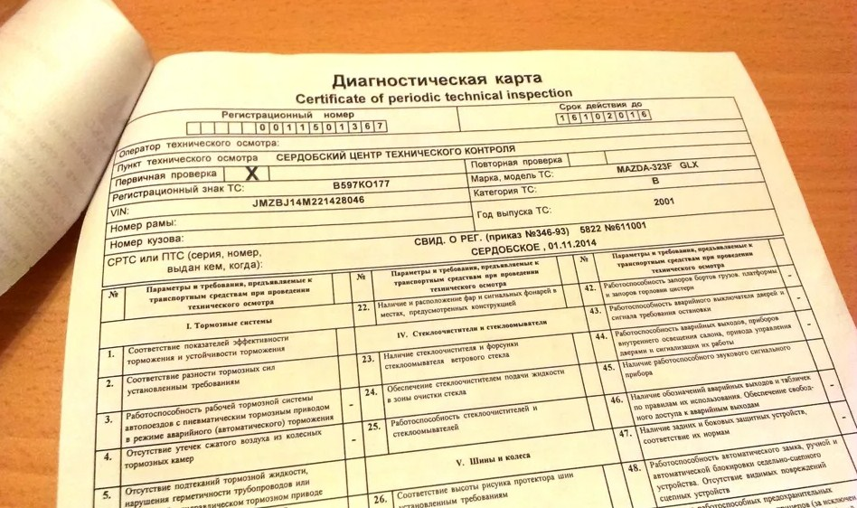

Каждый автолюбитель рано или поздно сталкивается с проблемой выбора, какие запасные части — оригинальные или неоригинальные — использовать при обслуживании и ремонте своего железного друга
.На бескрайних просторах Интернета можно встретить миллионы неоспоримых аргументов как сторонников исключительно оригинала, так и ярых его противников. Защитники оригинала убеждены, что достичь изначально заданных производителем автомобиля параметров, а соответственно — надежности, долговечности и функциональности, можно только при условии замены отработавшего или вышедшего из строя элемента точно таким же, родным
. И с этим трудно спорить. Однако у противников использования только оригинальных запчастей тоже есть ряд аргументов, главный из которых — высокая цена, значительную долю в которой составляет именно принадлежность к автомобильному бренду. И многие просто не готовы, а иногда и не в состоянии, платить такую высокую цену, тем более что современный рынок автомобильных запчастей предлагает широчайшую альтернативу в виде аналогов-заменителей.
После некоторого время использования некачественных запчастей автомобиль приходит в негодность и нуждается в ремонте, который могут провести только профессионалы в СТО. Особенно опасны те запчасти, которые связаны с безопасностью вождения, например, ремень ГРМ, тормозные колодки. Приобретение таких запчастей может нанести непоправимый вред не только вашему авто, но и пассажирам. В итоге, цена, которая изначально казалась очень выгодной, может стоить вам в несколько раз дороже
Первыми называют те, которые поставляются на конвейер при сборке автомобиля. Но при этом автопроизводители сами делают лишь немногие узлы и агрегаты, а основную массу комплектующих заказывают у других компаний. В свою очередь, эти самые другие компании могут производить запчасти как для автопрома, так и для вторичного рынка. И если первые могут маркироваться брендом автомобиля, то вторые — собственной маркой производителя.
Существует также и компании, которые производят автозапчасти исключительно для вторичного рынка. Среди таких деталей немало как хороших, нередко не уступающих оригинальным по качеству, так и очень плохих. В этом случае автовладелец должен тщательно проверять производителя в сети Интернет и сравнивать цены с другими поставщиками. При очень низкой стоимости автодеталь может быть упакована как восстановленная, которая может прослужить вам короткое время.
Визуально подделку можно определить по явным недостаткам — заусеницам, сколам, трещинам, несоответствиям шероховатости/твердости/защитной обработки, требуемых для данной поверхности. Обязательно требуйте у продавцов сертификаты соответствия товаров международным и российским стандартам. Все производители выдают своим поставщикам копии сертификатов, а те, в свою очередь, делают копии для розничных точек. Также перед тем как приобрести запчасти учитывайте момент, как их потом будете устанавливать. Ведь нередко работники СТО предоставляют гарантию на свои работы только при покупке запчастей и расходных материалов непосредственно на станции.
А вот шины и диски мошенники подделывают гораздо реже, так как в связи с длительным периодом эксплуатации их качество достаточно просто проверить.

Оригинальный или качественный ШРУС на Ауди А4 – деталь с длительным эксплуатационным сроком, но при порванном пыльнике далеко не уедите. Основная задача этого элемента – сберечь механизм «гранаты» от пыли, влаги и крупных фракций. Он выполняет следующие функции: Защита шарнира от влаги, пыли, мусора и грязи; Удержание смазки в механизме; Защита смазки от различных загрязнений.


Прохождение техосмотра сопровождается заполнением диагностической карты. Основанием для ее заполнения служат полученные данные проведенных исследований. Ведение диагностической карты регулируется положением Федерального Закона №170 «О прохождении техосмотра ТС». Чтобы правильно оформить диагностическую карту, владелец автомобиля должен предъявить пакет документов. В зависимости от статуса хозяина авто, условий осмотра, варианта владения транспортным средством, года его выпуска, список может отличаться. Ст. 19 ФЗ 170 указывает на стандартный набор документов:
